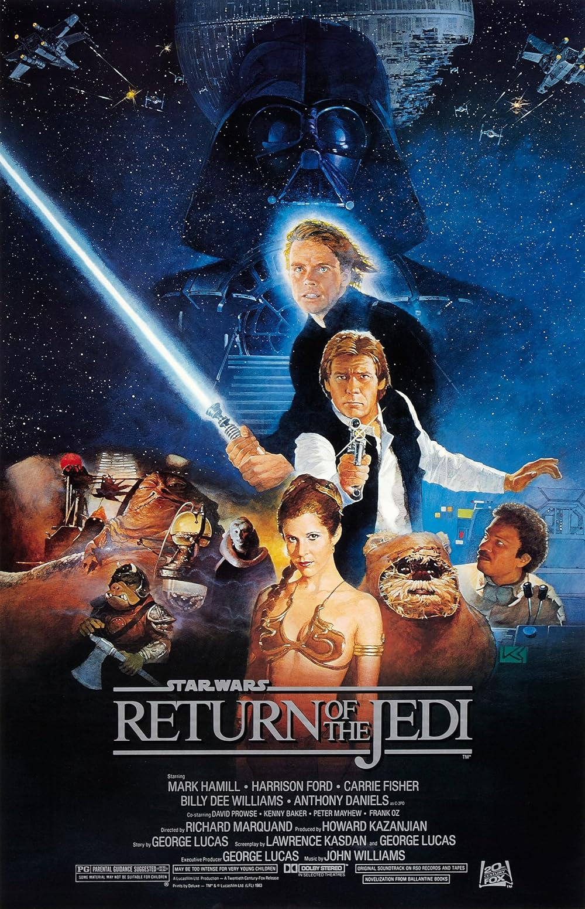

Hello! My name is Emmett Martin, I am originally from Milton,
Massachusetts and currently a senior at Babson College. At Babson I am
very involved in the community, I am on the men's lacrosse team, apart of
athletes in action, head of community service for the student athlete
advisory council (saac) and a member of the Babson Finance and Consulting
associations. In my free time I enjoy spending time with my friends,
watching sports and movies, playing video games and exercising. I have
always been a very active person, whether that be playing sports, swimming
running or lifting weights. A fun fact about me is that I am bilingual,
fluent in french, and learned exclusively in french for two years in
elementary school.
My journey to Babson was very unique as I was a recruited athlete. I
committed to the admissions process at Babson during the summer going into
my senior year. What drew me to Babson was the diversified curriculum
which allowed someone to explore all aspects of business and develop an
entrepreneurial mindset. Babson's location being close to home was not a
major factor in my decision but has been nice as it is easy to see family.
My time at Babson has been an unbelievable experience as I have gotten to
meet unbelievable people from across the country and world, be challenged
to think differently and develop new skills by great professors and
understand what I enjoy about business. I am currently in the thick of job
searching and ideally would be working in finance or strategy in Boston.
Finance and strategy are interesting to me as they are quantitative and
give you the opportunity to make business decisions with tangible impacts
on the company. I would love to eventually be an entrepreneur but
currently do not have many viable business ideas.
My Interests
Exercise
Ever since I was a little kid I have been into exercise. I played a
number of sports growing up and since have gotten into running, biking
and lifting weights. I go on runs from time to time and think it is a
nice way to clear my mind and get a good sweat in. I biked a lot to get
to and from friends' houses growing up and recently picked it back up.
This past fall with my teammates I completed a 50 mile bike ride for
charity from downtown Boston to Providence, Rhode Island. I also enjoy
peloton workouts, particularly the scenic rides, they are a great way to
get some cardio without freezing during the winter. I started lifting
weights in eighth grade with a friend over the summer and since then
have absolutely loved it. Depending on the time of the year I usually
lift 2-4 times a week. My favorite lift is the backsquat.
Spending Time With Friends
I love spending time with friends, whether that be relaxing playing
video games, going to get food, or doing some sort of activity. I am the
unofficial NHL (the video game) champion of my friend group and we play
quite a bit. Getting together to relax, talk and play video games has
been a fun and semi-competitive way to pass time together. My friends
and I often go to Chipotle, Pressed Cafe, or Anna's Taqueria when we get
sick of eating at Trim. Going out for food is always a fun way to end
the day with friends. Other activities I do with friends are going to
sporting events, and playing golf.
Watching Movies
I love watching movies, particularly Marvel and Star Wars movies. I have
seen every Star Wars movie multiple times, read comics and watched most
of the TV shows. Similarly, I have seen almost every modern Marvel
movie, even some of the recent bad ones. My favorite characters and
movies in each are Anakin Skywalker and Return of the Jedi for
Star Wars, and Iron Man and Avengers: Endgame for Marvel. I
really enjoy going to the theater, getting popcorn and watching a movie
or throwing on Netflix and watching with friends and family.

Sports
Sports have always been an interest of mine. As a kid I played a number
of sports, including soccer, hockey, lacrosse and basketball. I also was
a big fan of Boston area teams, such as the Bruins, Celtics, Patriots,
Red Sox and BC Eagles. I watched SportsCenter with my dad every
Sunday morning growing up. I still follow sports closely, now through
podcasts moreso than through television. My favorite sports podcast is
Barstool Sports'
PardonMyTake